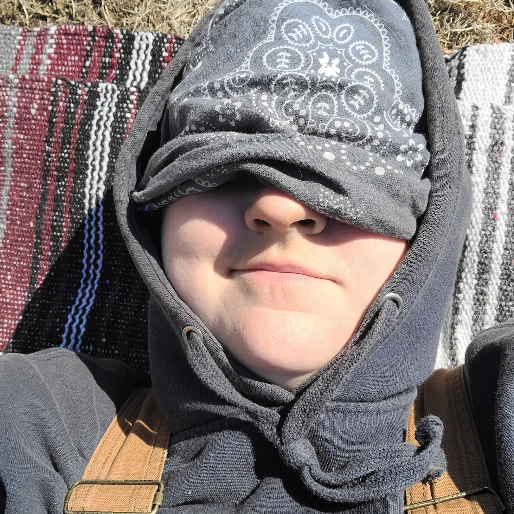

2/23/26 I've been feeling pretty trapped and restless lately, and I've found that one of the best remedies is to go out and interact with people (if I have the energy to also *deal* with people, haha). Yesterday I did just that! I have a really comfy dark blue crewneck sweatshirt that says "optimistic" across the front in fun loopy lettering, and I decided that was the vibe I needed for the day, so I wore it. Well the universe wanted to make sure I knew this was a good call, because two different people said how much they liked it! The second person, an older gentleman, was so sweet about it too: he was clearly aware that a woman alone may be wary of a man approaching them, so he sort of called to me from a distance at first. This put me at ease right away so I thanked him and told him I had found it at Savers and loved it! We had a nice little chat (he was heading to Savers next after the store we were in) and he told that when he has a hard time at work and goes to his manager, the other man gives him a word to focus on. He said that lately that word has been "perseverance". I said how much I liked that and what a great manager he must have, he agreed, and we went our seperate ways. Not only was it a lovely, kind, and respectful interaction, but I also took it as a direct message: persevere! I really needed that word at that moment, and it was such a nice way to be reminded of it. Thank you random stranger!
2/20/26 Well, I really meant to find a glimmer each day to record, as a way to start the new year out on the right foot, ya know? Instead I got and stayed sick, it snowed a bunch and I couldn't work on the bus, and I ended up in a depressed funk for much of January and February. UGH. Here's to fresh starts and not putting so much pressure on myself. Yesterday was the first really good day I've had in a long time, and I feel like the end of this miserable winter may finally be almost sorta kinda in sight? Let's hope so- I've got adventures to get on with! Here are some cute/funny/feelgood stickers I've seen on cars lately- very glimmery!

 01/05/26 Finally felt like myself today for the first time in about a week and a half! Winter colds are the worrrrrrst!!
01/05/26 Finally felt like myself today for the first time in about a week and a half! Winter colds are the worrrrrrst!!
01/04/26 Breakfast for dinner!
01/03/26 There was a gigantic flock of starlings muttering to each other (really though, it sounded like muttering!) as they flew back and forth between the powerlines and some apparently delicious shrubs.
01/02/26 I finally had a wall of the bus ready to paint and I looooove the yellow color I picked! It gives Winnie the Pooh and sunpuddle naps ü•∞
01/01/26 The dogs got to wake up and romp in some actively falling snow today! So happy for them. less happy for me- but still going to call it a win!
12/17/25 Today I brought my Tiny Gremlin (Lu) to the vet for a post dental recheck. First thing the receptionists said when we walked in was, "Where are her pajamas!? She is COLD!" üòÜ Made me laugh so hard- I promised them I had her heated seat on in the car! Then when our amazing vet came in, the two of us just sat on the floor in the exam room chatting, with Lu running back and forth between us. I gave her a heads up that we were going to be moving out of the state and explained about the bus. She suggested some spots to check out and hike at, and even said that she has a friend she thinks I'd like in Wyoming and said I should let her know if I end up there and she'd connect us. Like, are you kidding me?? So freaking sweet!!! Made my entire day. ü•∞
12/15/25 I made a friend at Homo de Pot (Home Depot) today! It's so fun to meet people in "the wild" who get so excited about the skoolie project- always rekindles my spark on the hard days!
12/12/25 Today I made myself take a break from working on the bus. Instead I napped, puzzled, listened to an audio book, wrapped Christmas presents, and hung out with my animals. It was suuuuch a nice relaxing day, very much needed. Say it with me now: rest! is! productive!
12/11/25 It was a BESTIE DAYYYYY! It's been way too long since I've seen my best friend, and tonight we met up at Old Sturbridge Village for their Christmas By Candlelight program. We had a grand old nerdy time exploring, asking questions, and tasting old-timey treats. It was wonderful to see her and catch up- whole week made!
12/05/25 My mum and I went
to our local
Arts Collaborative
winter show and sale this evening and man on man were there so many
lovely interactions! I saw lots of friends from my own days in the
Collaborative, and met some new ones as well. The bus project (The
Birdie Journey) was discussed at length, with new friends and old, which
inspired me to get my butt moving and get the site up to date! So
thanks, friends!
 10/13/25 A
quick note before this story, for the sake of context: when it's
especially bright out I have a sunhat that I use at work (landscape
gardening) to protect my eyes and face. Because I'm too feral to wear a
wear a cutsie sunhat, I pinned it up and stuck feathers in one side (see
photo!). Ok, now that you've got that information in your brain, let's
continue. At some of the houses I go to for work I get lucky, and there are either
kids or dogs outside who I'll get to interact with. One day we pulled up
to this house and there was a mama and 3 kiddos playing in the yard. I
chatted with them for a few minutes and then they went inside to have
lunch. As we were heading back to the truck later to leave, I notice
that they've come out to the front steps and that one of the little guys
is making a beeline for me. I crouch down as he approaches and he says
he wants to show me something.
10/13/25 A
quick note before this story, for the sake of context: when it's
especially bright out I have a sunhat that I use at work (landscape
gardening) to protect my eyes and face. Because I'm too feral to wear a
wear a cutsie sunhat, I pinned it up and stuck feathers in one side (see
photo!). Ok, now that you've got that information in your brain, let's
continue. At some of the houses I go to for work I get lucky, and there are either
kids or dogs outside who I'll get to interact with. One day we pulled up
to this house and there was a mama and 3 kiddos playing in the yard. I
chatted with them for a few minutes and then they went inside to have
lunch. As we were heading back to the truck later to leave, I notice
that they've come out to the front steps and that one of the little guys
is making a beeline for me. I crouch down as he approaches and he says
he wants to show me something.  He holds up a toddler-sized baseball cap
with a turkey feather taped precariously to the side. So that we could
match. ARE YOU KIDDING ME?? ü•π Day made, instantly.
He holds up a toddler-sized baseball cap
with a turkey feather taped precariously to the side. So that we could
match. ARE YOU KIDDING ME?? ü•π Day made, instantly.
10/13/25 On a more meloncholy nostalgic note, my family traveled to New
York state to scatter my grandma's ashes in the same place we put my
grandfather's. My mum's cousin brought beautiful flowers for us to leave
with her as well.  It was a beautiful day and brought us all a lot of
peace.
It was a beautiful day and brought us all a lot of
peace.
10/13/25
This was my last big crochet project- a snugglely bunny for my friends
who were expecting their first (baby boy has since arrived and is doing
wonderfully!).

10/13/25 LOOK AT THIS BEAR ROCK. That is all.
10/13/25 WOW I haven't added anything here in forever! Between my full time job and working on the bus every weekend, priorities have been elsewhere. But here I am,
trying to get caught up! I'm going to treat this like a photo dump I'd
send to a friend and stick a bunch of nature photos below, mostly taken
when I was out and about in people's yards for work (landscape
gardening). Then I've got a few photos that deserve their own individual
posts because they have stories to go along with them, so I'll post
those separately.


5/7/2025 Managed to get myself out of the house for a hike with the
dogs today, which admittedly felt pretty good. At one point we were
going up a slight hill and there was a young maple tree with its
branches overhanging the path at eye level. The light was behind it
and you could see every vein in the leaves. Simpley beautiful. üòå
5/4/2025 [Mildly] spicy tuna rice bowls for dinner courtesy of yours
truly! They were yummy, and the kewpie mayo and nori mix topping
really sealed the deal. I also had the privledge to take care of a
couple extremely spoiled but equally awesome kitties this weekend.
Silly mister T here gave me his belly to admire and even purred for
me!
4/26/2025 With help from my super smart little bro, I figured out how
to put a "scroll to top" button on the site! Woo hoo!
4/25/25 This week I've been putting the subfloor in on the bus, which
has involved a lot of trips to home depot, as well as renting a pickup
from them to bring plywood and insulation home. I gotta shout out the
Danvers Independece Way HD because everyone there that I've interacted
with has been incredible. From my buddy Douglas who set me up with a
pro account, guarded my carts while I ran around grabbing what I
needed, and even went to find and retrieve something I needed himself,
to the guys in the tool/truck rental room who were having a hell of a
busy day but were still cheerful with me and had the jokes ready to
go- every single person was a total love and made a potentially
stressful task so much easier! What a glimmer filled week ü•∞
4/21/2025 Best glimmer ever to report today!! About a year ago I made
a crochet elephant out of a jersey cotton bedsheet I cut up. He was a
little mishapen as he was one of my very first crochet projects, but
adorable nonetheless. Since then he's been sitting on a shelf waiting
for the right kid to come along for me to gift him to. Well folks,
today was the day! My mum teaches two adorable little kiddos who have
the most wonderful parents ever. On the way back from a trip to the
bathroom, the mom and one of the kids noticed my art hanging on the
wall and were so enthusiastic and kind about it. I grabbed a book of
my art to share with them (LOVE getting kids excited about things
they're interested in, and this one apparently loves art) and then
realized they'd be the perfect kids for my elephant to go to!
I tried
to talk to the mom first but the little one snuck in and literally had
their mouth hanging open when they saw the ellie. They were both SO
excited and kiddo promised to share with the sibling who was
mid-lesson. My heart is absolutely overflowing at their delight. ü§ó
4/13/2025 Oh hey I'm 31 now, gross! Highlights of my birthday weekend
included muffins from my favorite spot, clay creations, unexpected
snow, and my boyfriend's mom bringing me home a cake! Cuteness all
around, and despite the fact that I am not a huge fan of birthdays, it
wasn't so bad all in all. ü•∞
4/8/2025 Naps. Sometimes the best part of the day is naptime and that
is valid and a-okay. üòå
4/6/2025 Catch-up glimmer post ready GO!
The way vines wrap around each other and twist together and together
and together; someone blocking traffic so that I could turn onto a
busy street; the sweetest older lady with a tiny chihuahua in her
shopping cart basket, and her daughter who stopped to chat and told me
that that dog and the others at home are her mom's BABIES and she
checks on them with a camera when she's away; catching up with
friends; spring flowers blooming; the dogs being soooo excited to see
me even though I'd only been away from them for a short time; finding
a salamander in the woods; friends' pets being excited to see me!
 3/27/2025 The blacksmithing class was AWESOME! My brother and I were
exhausted by the end but we had such a great time. If you're ever near
Franconia, NH, look up
Iron Mike's Forge!
Mike was kind, funny, patient, and helpful; I can't reccomend this man
enough! An additional smallish glimmer for the week was this gorgeous dried clump of
flowers I noticed when I was at the park with the dogs. I can't wait to have a "real" camera to shoot with again!
3/27/2025 The blacksmithing class was AWESOME! My brother and I were
exhausted by the end but we had such a great time. If you're ever near
Franconia, NH, look up
Iron Mike's Forge!
Mike was kind, funny, patient, and helpful; I can't reccomend this man
enough! An additional smallish glimmer for the week was this gorgeous dried clump of
flowers I noticed when I was at the park with the dogs. I can't wait to have a "real" camera to shoot with again!
3/21/2025 I finished the classroom part of my work training today!
Woohooooo! I also grabbed my brother and headed up to the White
Mountains for an overnight and, tomorrow, a private blacksmithing
class. We're both super stoked about it üòÅ I'm not usually one to
enjoy the snow, but I must say that the light dusting that seems to
stick to everything up here is quite lovely.
3/20/2025 Today's glimmer is simple- I passed The Big Test at work
training! Woohoooo! I also passed a re-do test which was important as
well. I don't learn as well from slides and lectures as I do from on
the job training, and I test horribly, so these
pass-it-or-lose-the-job tests are scary! I did it though and am
feeling much more relaxed now.
 3/18/2025 Listen, sometimes you gotta find the silly little things to
make your day! Last night I came home from work training frustrated
and exhausted, so I decided to buy myself a little gifty that would
help me feel better and take better care of myself! LOOK HOW COLORFUL!! This
cutie bento box
type deal is totally meant for children, but ya know what, adults
deserve bright colors too! It made me so happy during my lunch break
(aka my 30 minutes of freedom from the torturous monotony of projector
slides) today. The other day I found a little Bingo keychain (huge Bluey fan here)
and that's been making me super happy as well. Gotta find the little
bits of light each day folks!
3/18/2025 Listen, sometimes you gotta find the silly little things to
make your day! Last night I came home from work training frustrated
and exhausted, so I decided to buy myself a little gifty that would
help me feel better and take better care of myself! LOOK HOW COLORFUL!! This
cutie bento box
type deal is totally meant for children, but ya know what, adults
deserve bright colors too! It made me so happy during my lunch break
(aka my 30 minutes of freedom from the torturous monotony of projector
slides) today. The other day I found a little Bingo keychain (huge Bluey fan here)
and that's been making me super happy as well. Gotta find the little
bits of light each day folks!
3/16/2025 I meant to post this the other day but forgot! After my
absolute mess of an attempt at pastina in the rice cooker, I went back
to something that I know how to do well and that I know is a fan
favorite- spam masubi rice!
Is it the best for us, nah, but it IS delicious! I added pineapple
this time which was a huge win. Also got a nori sprinkle topping type
deal from HMart which really made it look (and taste) fancy!
03/15/2025 Y'all because I finally have steady income on the imminent
horizon, I get to be back at the gym! If you were to go back in time
and tell 13 year old me that that was a thing I was excited about she
would laugh in your face, but here we are!  Every inch of my body hurts
but I feel the best I've felt in months. The gym I decided on has
heavy bags so I can keep boxing (oh right, some of you don't know that
my old gym was Title Boxing) AND they have a pool AAAAND a sauna! So
fancy! Everyone I've interacted with there so far has been incredibly
welcoming, kind, and unintimidating. Huge win! Here's to sore muscles!
Every inch of my body hurts
but I feel the best I've felt in months. The gym I decided on has
heavy bags so I can keep boxing (oh right, some of you don't know that
my old gym was Title Boxing) AND they have a pool AAAAND a sauna! So
fancy! Everyone I've interacted with there so far has been incredibly
welcoming, kind, and unintimidating. Huge win! Here's to sore muscles!
03/13/2025 Yeaaaah that did not go according to plan. Turns out making
pastina in the rice cooker is NOT a go. Oh well, try again some other
time! On the bright and totally unrelated side- I got my nose pierced
the other day!
03/12/2025 Today I'm attempting to make pastina, aka Italian
Penicillin!! I'm cooking half an onion, 3 carrots, and 4 sticks of
cellery in chicken stock until they're soft. Then I'll take the solids
out and blend them and set aside. I think I'll then cook the pastina
in the chicken broth and then add the pureed veggies back in? I'm
doing this all in a rice cooker so it's a bit of an experiment! Another
happy thing for today is that I upgraded my terrarium to have more
plants and moss.
Oh yeah, I
havent told you about that yet, have I! I have a small terrarium I
built for 5 adorable "dairy cow" isopods. Think cow colored rolypoly
bugs! They're super cute and the easiest pet I've ever had by far!
03/11/2025 It got to 60° out today! Warm sunny weather calls for one
thing: lizard time!
Lizard time
is where I lay on the ground and simply soak up the sun. It's a 10/10
experience, highly reccomend!
03/07/2025 Today was a good day! I did a Taskr job in the morning and
then headed into Boston for an interview. The job title is "ramp
agent" at the airport- essentially doing all the stuff that happens
outdoors under the plane. It sounded like fun; physically demanding,
working in a team and outdoors, getting to work around
internationally-traveling aircraft. The interview went swimmingly and
at the end the hiring manager said he'd get me set up with a full
application. I thought he meant I'd passed the first step and was on
to round two, but then he congratulated me and I realized he'd meant I
was hired! Gotta love my silly brain sometimes. It'll be about a month
before I'm working, but I'm just excited to have consistent income on
the horizon- gym membership here I come!